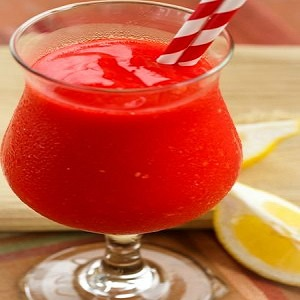

Fruit Punch
Fruit punch is a delicious and refreshing drink made from a combination of various fruit juices. It's a popular choice for parties and gatherings, as it offers a vibrant burst of flavors. With its colorful appearance and sweet taste, fruit punch is loved by both kids and adults.
Ingredients
- 2 cups orange juice
- 1 cup pineapple juice
- 1 cup cranberry juice
- 1/2 cup lemon juice
- 1/4 cup grenadine syrup
- 1/4 cup simple syrup
- 2 cups sparkling water or soda
- Ice cubes
- Slices of fresh fruits (such as oranges, lemons, and strawberries) for garnish
Instructions
- In a large pitcher, combine the orange juice, pineapple juice, cranberry juice, lemon juice, grenadine syrup, and simple syrup.
- Stir the mixture until well combined.
- Refrigerate the fruit punch for at least 1 hour to allow the flavors to blend.
- Just before serving, add the sparkling water or soda to the pitcher and stir gently.
- Add ice cubes to individual glasses and pour the fruit punch over the ice.
- Garnish each glass with slices of fresh fruits.
- Serve chilled and enjoy!